Todo lo que afirmamos se puede verificar. Acá están los documentos.
El argumento completo, corto: Cajamarca es el departamento más pobre del Perú, su Gobierno Regional ejecuta el 97 % de lo que recibe, y aun así de cada 100 soles 68 van a planilla y solo 22 a inversión. El problema no es cuánto se gasta: es dónde.
Narrado en tercera persona por un locutor: nadie finge ser el candidato. Las cifras se construyen en pantalla —suben contando, las barras crecen, la serie se dibuja— y cada lámina cita su propia fuente, no una referencia general al final. Lleva subtítulos en español. La música y la narración están acreditadas en créditos.
El discurso de plaza completo. Las cifras se construyen en pantalla —suben contando, las barras crecen, la serie se dibuja— y cada lámina cita su propia fuente, con documento, página y enlace. Lleva subtítulos en español. La narración es provisional: la voz es sintética y la versión definitiva la graba Edison Carrasco Olivera con la suya. Las cifras son oficiales y están en la tabla de fuentes de esta página.
Pesa 82 megabytes, pero el reproductor no lo descarga hasta que usted le da play: abrir la página no gasta esos datos.
| Dato | Fuente | Enlace |
|---|---|---|
| Pobreza monetaria de Cajamarca: 41,0 % en 2025 y 45,0 % en 2024 | Instituto Nacional de Estadística e Informática, notas de prensa de pobreza monetaria | abrir |
| Población y ruralidad de las 13 provincias | Instituto Nacional de Estadística e Informática, Censos Nacionales 2025 | abrir |
| Anemia infantil de Cajamarca: 39,4 % en 2025 | Verificación de PerúCheck con datos de la Encuesta Demográfica y de Salud Familiar del Instituto Nacional de Estadística e Informática | abrir |
| Las 865 postas, la brecha educativa, el riego y las vías | Plan de Gobierno Regional de Cajamarca 2027-2030 del Partido Democrático Somos Perú, presentado al Jurado Nacional de Elecciones (expediente ERM.2026021166) | abrir |
| Hoja de vida del candidato y estado de la fórmula | Plataforma Voto Informado del Jurado Nacional de Elecciones | abrir |
| Participación y resultados oficiales de las elecciones regionales de 2022 | Oficina Nacional de Procesos Electorales, datos abiertos, resultados por mesa | abrir |
| Autoridades regionales en ejercicio y ganador de la segunda vuelta de 2022 | INFOGOB, Observatorio para la Gobernabilidad del Jurado Nacional de Elecciones | abrir |
| Fecha de la Segunda Elección Regional: 6 de diciembre de 2026 | Diario Oficial El Peruano, Acuerdo del Pleno del Jurado Nacional de Elecciones del 7 de octubre de 2026 | abrir |
En la plataforma Voto Informado del Jurado Nacional de Elecciones puede consultar la lista 38403, expediente ERM.2026021166, y ver el estado de la fórmula: Edison Carrasco Olivera (documento nacional de identidad 27285773) como Gobernador Regional y Amparo Leocadia Ramírez Triveños (30507109) como Vicegobernadora Regional, ambos INSCRITOS.
Cada gráfico está hecho con los datos oficiales y lleva su fuente impresa. Se pueden descargar y usar.
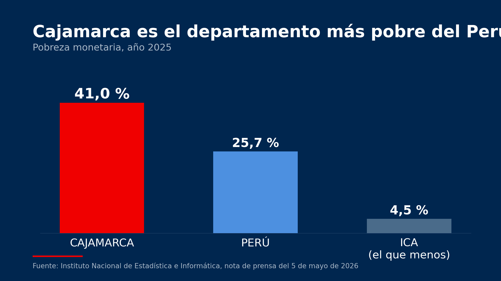
Cajamarca es el departamento más pobre del Perú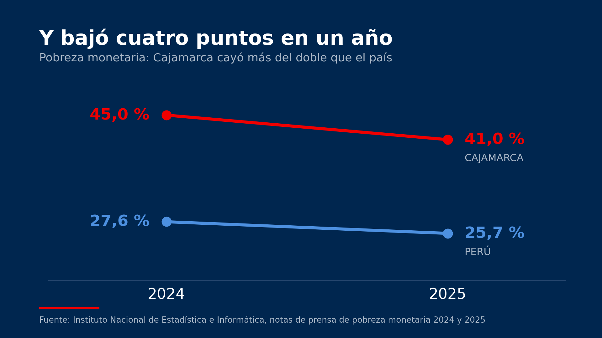
La pobreza bajó cuatro puntos en un año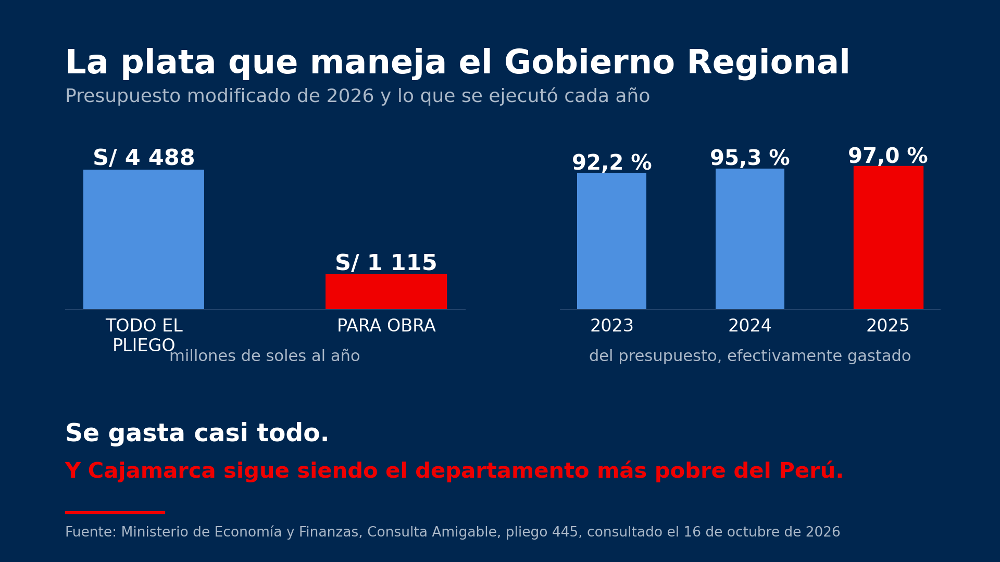
La plata que maneja el Gobierno Regional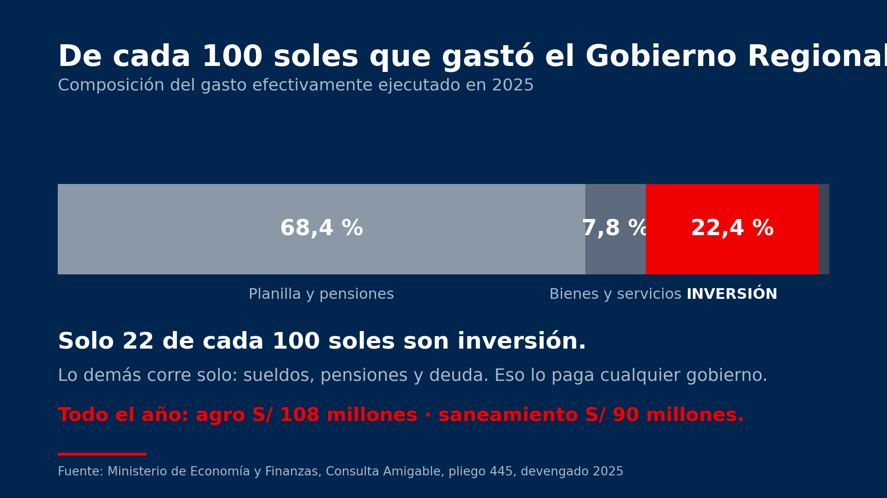
En qué se va cada sol: la calidad del gasto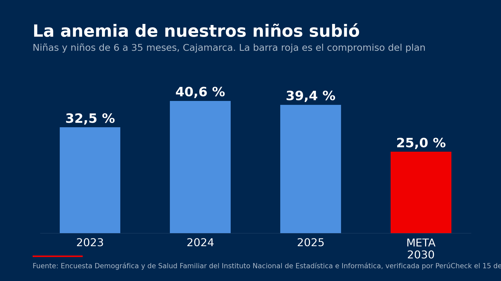
La anemia de los niños subió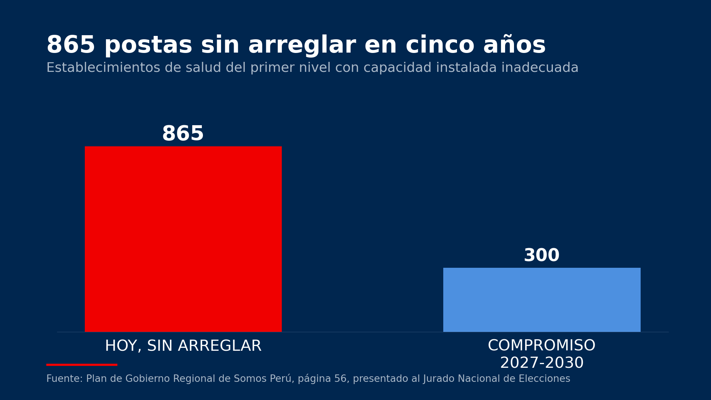
865 postas sin arreglar en cinco años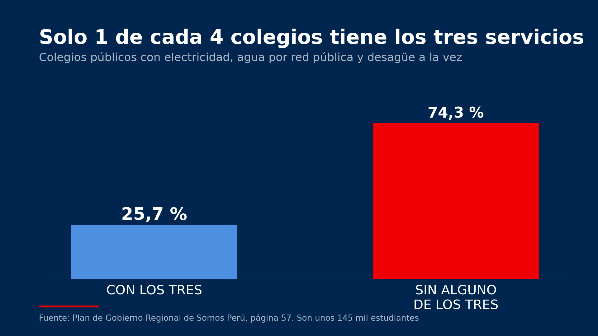
Solo 1 de cada 4 colegios tiene los tres servicios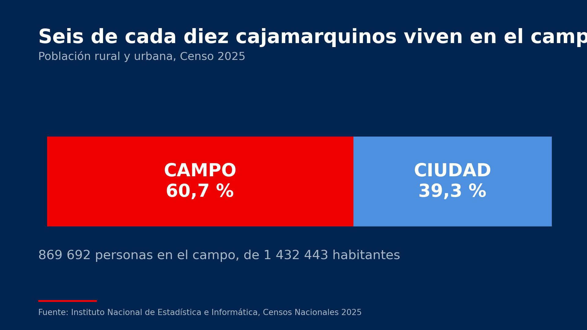
Seis de cada diez viven en el campo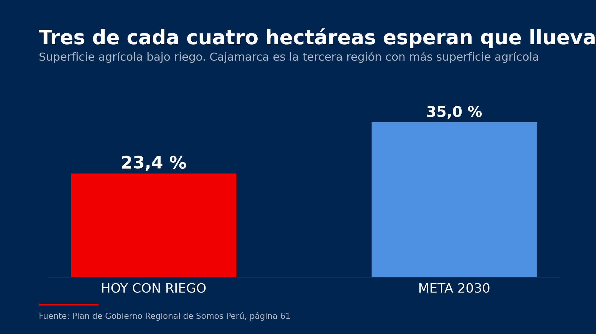
Tres de cada cuatro hectáreas esperan que llueva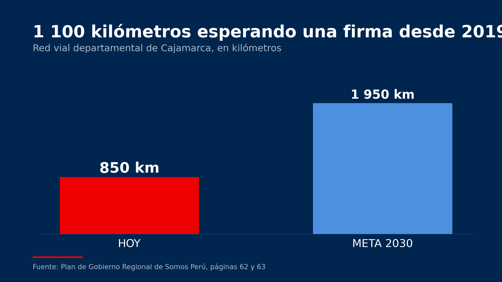
1 100 kilómetros esperando una firma desde 2019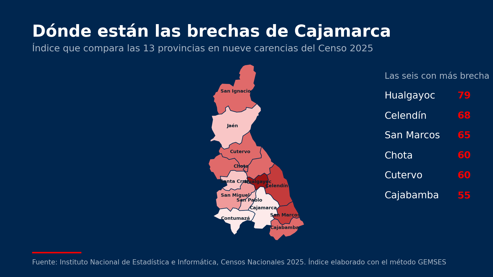
Dónde están las brechas, provincia por provincia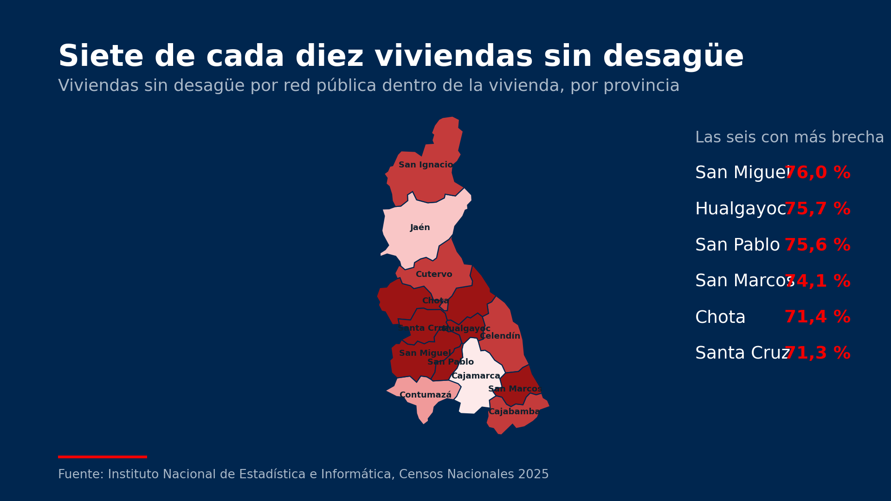
Siete de cada diez viviendas sin desagüeLa pista instrumental de fondo son dos temas de sikus y bombo —«Mula Lunthata» y «29 de setiembre»— interpretados por Abel Christian Apaza Amanqui, del proyecto Sikuri Sumaq Taqi (Azángaro, Puno), publicados en Wikimedia Commons bajo licencia Creative Commons Atribución-CompartirIgual 4.0. Esa licencia obliga a citar al autor y a compartir cualquier obra derivada con la misma licencia: los videos de este portal se publican bajo Creative Commons Atribución-CompartirIgual 4.0.